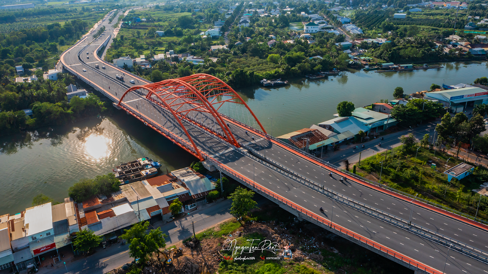

🌙 / ☀️
🎵

Thông tin chính
- Tên chính thức: Cầu Cái Cam
- Vị trí: đi qua phường 9 và phường Trường An, thành phố Vĩnh Long
- Bắc qua: Sông Cái Cam
- Năm khởi công: 30/10/2020
- Năm hoàn thành: 15/11/2022
- Chiều dài: 780 m
- Tổng mức đầu tư: 664 tỷ VNĐ
- Kết cấu: Cầu bê tông cốt thép
- Vai trò: Kết nối giao thông nội tỉnh và Quốc lộ 1A